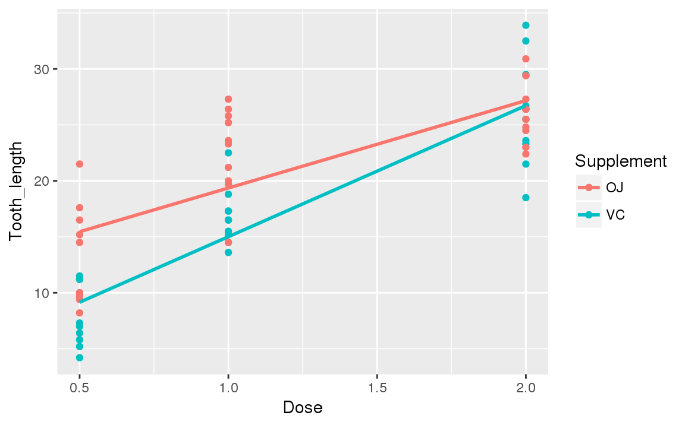

16 10.統計処理
16.1 10.1.とりあえずやってみる。
ToothGrowthというデータセットを使ってみる
head(ToothGrowth)
#> len supp dose
#> 1 4.2 VC 0.5
#> 2 11.5 VC 0.5
#> 3 7.3 VC 0.5
#> 4 5.8 VC 0.5
#> 5 6.4 VC 0.5
#> 6 10.0 VC 0.5
class(ToothGrowth)
#> [1] "data.frame"- モルモットの歯のデータセット
VCかオレンジジュース(Oj)の用量と歯の長さ

16.2 10.1.1.方針
- tidyverse群がつかえるようにtibbleにする。
- 列名をわかりやすくする
- とりあえず散布図を作る
- 他の処理について考える
16.3 10.1.2.tibble型の威力
ToothGrowth2 <- as_tibble(ToothGrowth)
ToothGrowth2 %>% head(2) %>% knitr::kable()| len | supp | dose |
|---|---|---|
| 4.2 | VC | 0.5 |
| 11.5 | VC | 0.5 |
ToothGrowth2 %>% tail(2) %>% knitr::kable()| len | supp | dose |
|---|---|---|
| 29.4 | OJ | 2 |
| 23.0 | OJ | 2 |
16.4 10.1.3.列名を変更する
- ここは参考ぐらいに
names(ToothGrowth2) <- c("Tooth_length", "Supplement", "Dose")
ToothGrowth2 %>% head() %>% knitr::kable()| Tooth_length | Supplement | Dose |
|---|---|---|
| 4.2 | VC | 0.5 |
| 11.5 | VC | 0.5 |
| 7.3 | VC | 0.5 |
| 5.8 | VC | 0.5 |
| 6.4 | VC | 0.5 |
| 10.0 | VC | 0.5 |
16.5 10.1.4.散布図で様子見
ToothGrowth2 %>%
ggplot(aes(Dose, Tooth_length, color = Supplement)) +
geom_point()
16.6 10.1.5.線形回帰分析
lm()を使う
ToothGrowth2_VC_lm <- lm(Tooth_length ~ Dose, data = ToothGrowth2 %>% filter(Supplement == "VC"))
ToothGrowth2_OJ_lm <- lm(Tooth_length ~ Dose, data = ToothGrowth2 %>% filter(Supplement == "OJ"))
ToothGrowth2_lm <- list(VC_lm = summary(ToothGrowth2_VC_lm), OJ_lm = summary(ToothGrowth2_OJ_lm))
ToothGrowth2_lm
#> $VC_lm
#>
#> Call:
#> lm(formula = Tooth_length ~ Dose, data = ToothGrowth2 %>% filter(Supplement ==
#> "VC"))
#>
#> Residuals:
#> Min 1Q Median 3Q Max
#> -8.2264 -2.6029 0.0814 2.2288 7.4893
#>
#> Coefficients:
#> Estimate Std. Error t value Pr(>|t|)
#> (Intercept) 3.295 1.427 2.309 0.0285 *
#> Dose 11.716 1.079 10.860 1.51e-11 ***
#> ---
#> Signif. codes: 0 '***' 0.001 '**' 0.01 '*' 0.05 '.' 0.1 ' ' 1
#>
#> Residual standard error: 3.685 on 28 degrees of freedom
#> Multiple R-squared: 0.8082, Adjusted R-squared: 0.8013
#> F-statistic: 117.9 on 1 and 28 DF, p-value: 1.509e-11
#>
#>
#> $OJ_lm
#>
#> Call:
#> lm(formula = Tooth_length ~ Dose, data = ToothGrowth2 %>% filter(Supplement ==
#> "OJ"))
#>
#> Residuals:
#> Min 1Q Median 3Q Max
#> -7.2557 -3.7979 -0.0643 3.3521 7.9386
#>
#> Coefficients:
#> Estimate Std. Error t value Pr(>|t|)
#> (Intercept) 11.550 1.722 6.708 2.79e-07 ***
#> Dose 7.811 1.302 6.001 1.82e-06 ***
#> ---
#> Signif. codes: 0 '***' 0.001 '**' 0.01 '*' 0.05 '.' 0.1 ' ' 1
#>
#> Residual standard error: 4.446 on 28 degrees of freedom
#> Multiple R-squared: 0.5626, Adjusted R-squared: 0.547
#> F-statistic: 36.01 on 1 and 28 DF, p-value: 1.825e-06
# Tooth_length = 3.295 + 11.716 * Dose
# Tooth_length = 11.550 + 7.811 * Dose- 回帰直線のプロット
ToothGrowth2 %>%
group_by(Supplement) %>%
ggplot(aes(Dose, Tooth_length, color = Supplement)) +
geom_point() +
geom_smooth(method = "lm", se = FALSE)